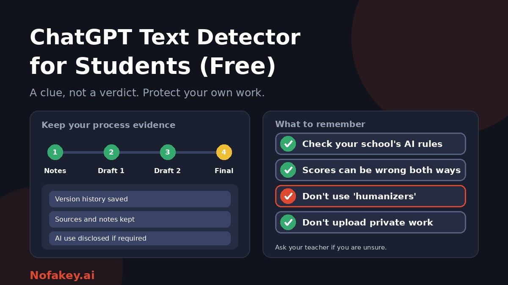

You have finished an essay and a worry creeps in: what if a teacher's detector says an AI wrote it? Or maybe you used a chatbot for help and want to know how it will look. Searching for a free ChatGPT text detector turns up dozens of tools, many promising instant, accurate answers. This guide explains what those tools can and cannot tell you, why honest students get flagged, and how to protect your work.
What a free "ChatGPT detector" actually does
Despite the name, most of these tools are not looking for one chatbot. They estimate how closely your text resembles patterns found in AI-generated writing, such as very predictable word choices and an even rhythm. Then they give a score or label. That is an estimate of resemblance, not evidence of who wrote it or how.
Even the company behind ChatGPT released a free detector in 2023 and said openly that it was not fully reliable. If the maker of the chatbot could not offer a dependable detector, treat any free tool's headline accuracy claim with caution.
What a detector cannot tell you
| It can | It cannot |
|---|---|
| Give a rough impression of how "AI-like" the wording is | Prove that you or an AI wrote the text |
| Highlight passages that look generic | Tell whether the ideas, research and thinking are yours |
| Show a different result on a revised draft | Give the same answer as your teacher's tool |
| Prompt you to add detail and your own voice | Judge short, quoted, technical or formulaic text reliably |
For more on why, read are AI detectors accurate?
Why honest students get flagged
- Clear, formal writing. Plain, tidy academic prose can look "predictable" to a detector.
- Non-native English. Careful, simple sentence patterns may be flagged more often. This is a known concern.
- Short answers. There are too few patterns to judge fairly.
- Templates and standard phrases, such as lab reports, definitions and reference lists.
- Grammar and rewriting tools, which smooth text in ways detectors may read as machine-like.
- Quotations and technical terms, which are not your own phrasing but sit inside your text.
The same idea in reverse: AI text that has been edited or paraphrased can slip past a detector. That is exactly why teachers and schools are told not to rely on a score alone. See AI detector policy for universities.
How to use a free detector sensibly
- Read your school's AI policy first. Rules differ by school, course and even assignment. Ask your teacher if it is unclear.
- Use a detector as a self-check, not a target. The goal is good, honest work, not a particular number.
- Look at which passages are flagged, not just the total. Often they are generic summaries. Ask yourself whether they say something specific that only you could say.
- Improve the writing, not the score. Add your own examples, reasoning, sources and voice. That makes work better whatever any detector says.
- Check more than one tool, and expect disagreement. Different tools give different answers on the same text.
- Do not paste private information. See the privacy section below.
Why you should not use an "AI humanizer"
Many detector sites also advertise tools to "make AI text undetectable." These are a trap for students:
- They do not fix an integrity problem. If AI use was not allowed, hiding it is arguably worse than the original use.
- They can be treated as concealment, which some schools consider more serious.
- They often make writing worse, with awkward phrasing and lost meaning.
- It is a cat-and-mouse game. Detectors change, so a "pass" today may not hold tomorrow.
- They may also store your text and ask for payment.
Protect yourself: keep process evidence
The best defence against a false flag is proof of how you worked. Build the habit before you need it.
| What to keep | Why it helps |
|---|---|
| Version history | Writing in a tool that saves versions shows your essay growing over time |
| Notes and outlines | Show how your ideas developed |
| Drafts | Different stages of the work, with your edits |
| Sources and reading notes | Show that you did the research and know where claims come from |
| Teacher feedback and messages | Show that you discussed the work |
| A record of any AI use | If AI is allowed, note the tool, what you asked it, and how you used its answers |
Also be ready to explain your work out loud. If you wrote it, you can talk about it.
Using AI honestly for study
- Know what is allowed. Some courses allow brainstorming or feedback, some allow none, and some require AI use. Rules can differ between assignments.
- Disclose when required. A short note is usually enough.
- Check everything. AI can state wrong facts and invent references. You are responsible for accuracy.
- Use AI to learn, not to replace learning. Ask it to explain a concept, then write in your own words.
- Do not submit AI output as your own work where the rules do not allow it.
Sample disclosure note (adapt to your school's rules)
I used an AI tool to brainstorm possible essay angles and to check my grammar. All research, arguments and final wording are my own, and I checked every fact and source myself.
More wording ideas are in how to label AI-generated content.
If you are flagged or accused
- Stay calm and polite. Anger can make things harder, even when you are right.
- Do not delete anything. Keep drafts, files and history as they are.
- Ask what was used. Which tool and what result? Remember that a score is not proof.
- Request a meeting and offer to talk through your work and show how you wrote it.
- Share your process evidence: version history, notes, drafts and sources.
- Ask about the process. Is there a chance to respond, an independent review and an appeal?
- Get support. Student advice services, a student union, a tutor or a trusted adult can help you prepare.
- Be honest. If you did use AI in a way that broke the rules, say so and ask what happens next. Honesty usually helps.
Privacy: think before you paste your essay
- Read the tool's data policy. Does it store text, share it or use it to train models?
- Remove personal details such as your name, student number and contact information.
- Avoid unfinished or sensitive work, such as research for publication, if you are unsure how the tool treats it.
- Be careful with browser extensions. Install only from official stores and check permissions. See the fake AI browser extension update scam.
- Be wary of tools that ask for payment to show your "full result."
For parents, teachers and tutors
Students are caught between powerful AI tools, unclear rules and unreliable detectors. Clear policies, conversations about process and fair review matter more than any score. See how to teach students to spot AI content for classroom ideas, and AI-generated research paper detection for higher-level work. If something online looks suspicious, such as an offer, a link or a message, you can paste it into our free checker for a quick first read. It is not a text detector for essays.
Conclusion
A free ChatGPT text detector can nudge you to make your writing more specific, but it cannot prove who wrote your work and it can flag honest writing. Know your school's rules, keep evidence of your process, use AI only as allowed and disclose it, avoid humanizers, and protect your privacy. If you are flagged, stay calm, show your work and ask for a fair review. Find more guides on the Nofakey.ai blog.
Frequently asked questions
Is there a free ChatGPT detector for students?
Yes, many free tools exist, but they vary in quality and can be wrong in both directions. Treat any result as a rough clue, not proof, and check your school’s rules.
Why was my own writing flagged as AI?
Detectors look for statistical patterns such as predictable wording. Clear, formal, plain writing, short texts, quotes, templates and some non-native English writing can resemble those patterns, so honest work can be flagged.
Should I use an AI humanizer to lower my AI score?
No. Rewriting to beat a detector does not fix an integrity problem, can make your writing worse, and may be treated as concealment. Follow your school’s AI rules and disclose permitted use.
How can I prove I wrote my essay?
Keep process evidence: version history, notes, outlines, drafts, sources and any messages with your teacher. Be ready to explain your work in your own words.
What should I do if I am accused of using ChatGPT?
Stay calm, do not delete anything, ask which tool and result were used, gather your drafts and notes, request a meeting, and offer to explain your work. Ask about the appeal process and use student support services.
Got a suspicious link, offer or message to check?
Run it through the checker